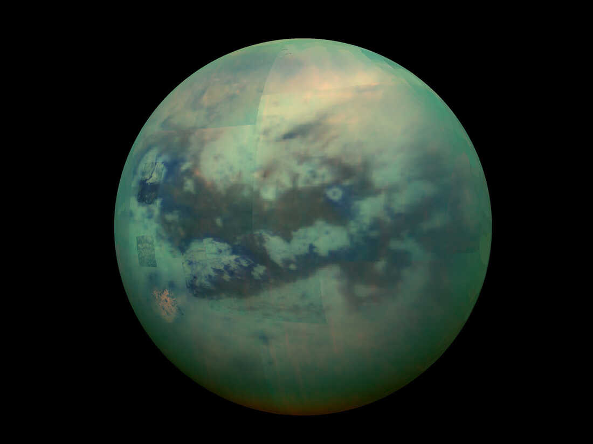

Satellites naturels du système solaire
Quelques lunes du système solaire.
Nous allons citer quelques lunes des planètes du système solaire
Une rapide approche des lunes du système solaire.
Trois lunes prises au hasard
Trois lunes classées par taille décroissante
- Titan
- Io
- Lune
Ariel
Wikipédia
Phobos
Wikipédia
La lune
 Wikipédia
Wikipédia
Titan

Wikipédia
Io
 Wikipédia
Wikipédia
La vidéo 1
La vidéo 2
La vidéo 3